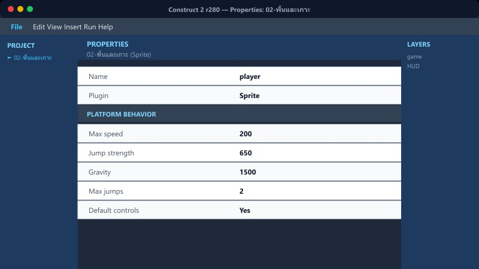
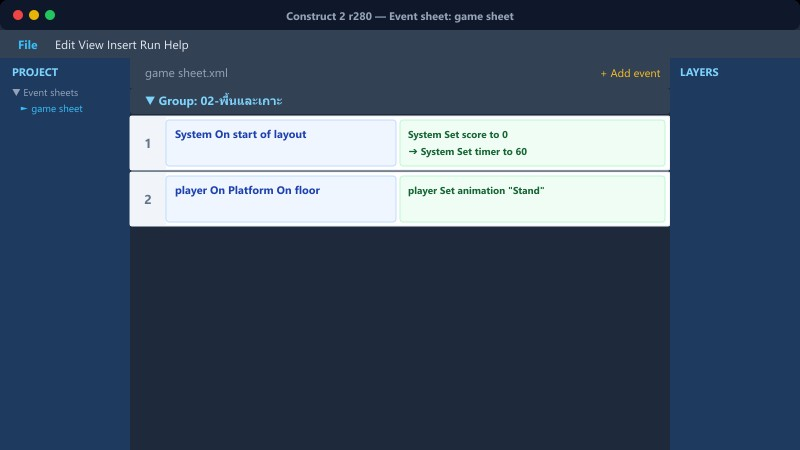
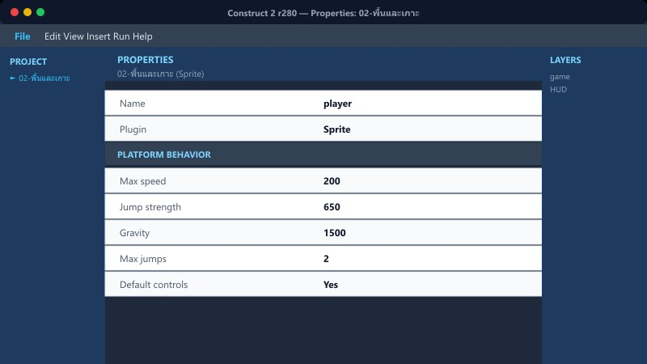

เป้าหมายบทนี้: ทำให้ผู้เล่นยืนบนพื้นและกระโดดขึ้นเกาะได้โดยไม่ตกทะลุ
วางพื้น→Solid→เกาะ→Jump-thru→F5 ทดสอบ
1พื้นหลัก TiledBackground2
Layout game → Layer game → เลือกพื้น
- หา object ชื่อ TiledBackground2
- Properties → Behaviors → Add → Solid
- ลากต่อกันตลอดความกว้างด่าน (อย่ามีช่องว่าง)
TiledBackground2 → Solid = ยืนบนและชนด้านข้างได้
ถ้าไม่มี Solid ผู้เล่นจะตกทะลุพื้นทันที
2เกาะ sky1 / sky2

เลือก sky1 แล้ว sky2
- Behaviors → Add → Jump-thru
- sky1 อาจมี Sine (ลอย) — คงไว้ได้
- อย่าใส่ Solid ให้เกาะ
Jump-thru = กระโดดทะลุจากล่าง แล้วลงยืนด้านบนได้
3ขนาด Layout แต่ละด่าน

คลิกพื้นว่างใน Layout → Layout properties
game = 4500 × 960
game2 = 5500 × 960
game3 = 6000 × 960
ผู้เล่นต้องมี Behavior Scroll To กล้องจึงตามไปทางขวา
4วางเกาะให้กระโดดถึง + ทดสอบ

ระยะพื้น→เกาะแรก ≈ ≤ 140 px · เกาะต่อเกาะแนวตั้ง ≤ 135 · แนวนอน ≤ 360
- กด F5 Preview
- เดินซ้ายขวาบนพื้น
- กระโดดทะลุเกาะจากล่าง
- ยืนบนเกาะไม่ตก
ทำจนมั่นใจก่อนวาง answer_platform / มอน